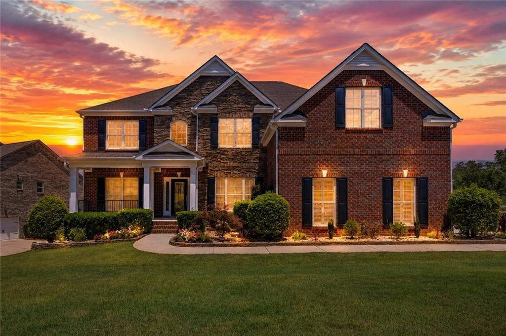
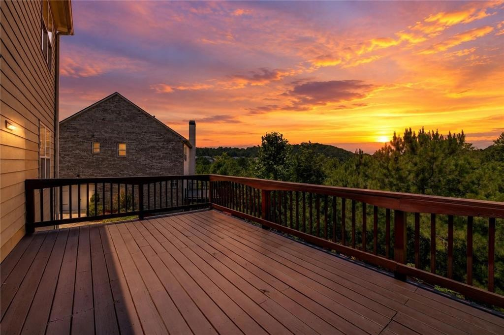
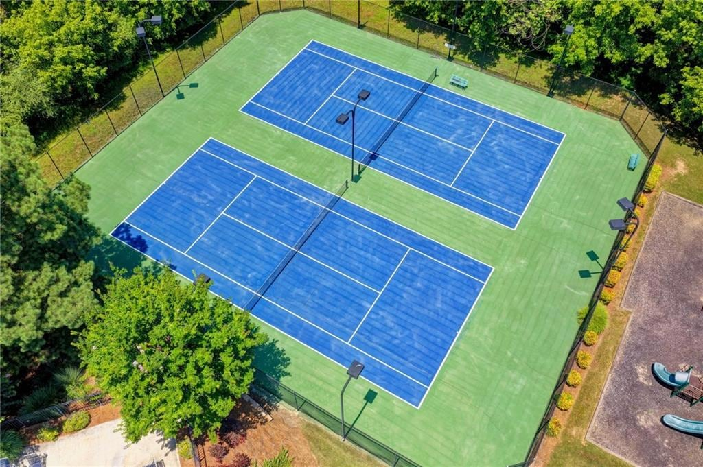
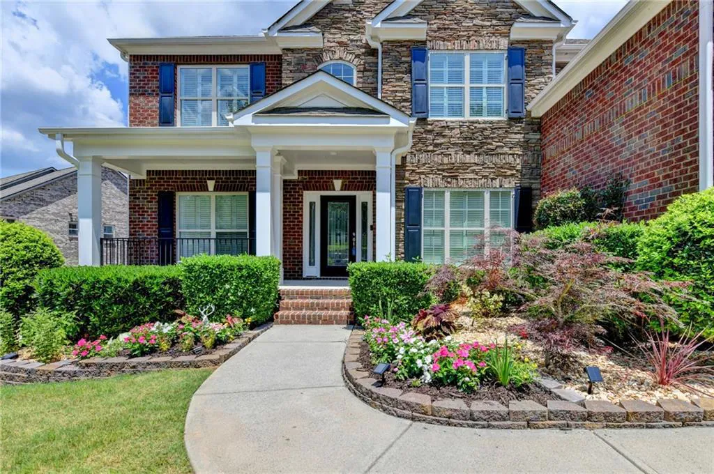

Private retreat
Four bedrooms, bedroom-bath flexibility and a separate media/flex room for movies, study or quiet work.

For sale · Cumming, Georgia
An executive-scale South Forsyth home designed for gathering, focused work and extended stays—framed by trees, double decks and the sound of the creek.
The Waterstone story
Welcome home to three independent living zones under one roof: an upper level for bedrooms and quiet retreat, a main level for everyday connection and focused work, and a terrace level for guests, projects, recreation and gatherings.
Windows throughout the home look toward the greenwood setting. Professional landscaping, mature fruit trees and a gated backyard with stair access on both sides make the outdoor spaces as usable as the interiors. The owners describe blueberry, banana, apple, peach and fig plantings. The backyard outlook changes with the seasons: green woodland and mountain views in spring and summer, fall color in autumn, and a clearer creek view in winter. The two decks extend living outdoors; the owners report seeing July 4 fireworks around the horizon from the decks. The creek can be heard through the warmer months, and morning and evening birdsong completes the setting.

Double decks, wooded outlooks, fall color and a wide horizon create room to gather or decompress.
Three connected zones
Four bedrooms, bedroom-bath flexibility and a separate media/flex room for movies, study or quiet work.
Island kitchen, breakfast, formal dining and living spaces, plus a guest bedroom/full bath and office/library.
Second kitchen, bath, lower bedroom, multipurpose room, game/flex room and deck access for guests, recreation and hosting.
Made for real life
Established community amenities, substantial living space and flexible rooms help make a major move feel settled sooner.
A private office/library, four upper-level bedrooms, a second-floor media/flex room and multiple quiet zones support parents working from home, children studying and everyone finding a door to close. The generously sized primary suite can accommodate multiple beds plus a sitting area.
A main-level guest bedroom with full bath sits near the formal dining room, breakfast room and large kitchen island—easy for daily life and welcoming for visitors.
A large multipurpose room, a dedicated game/flex room and other flexible rooms below can become a movie theater, game room, entertainment space, quiet room, storage, fitness, activity or guest space. A separate door opens to the lower deck. The home has hosted a 150-person gathering using indoor and outdoor spaces.
A multipurpose plan
Parents can separate calls and focused work between the main-level office/library and the main-level guest bedroom, which can serve as a second office when guests are not staying.
The terrace level combines a full kitchen, bath, bedroom option and attached deck with additional rooms for storage, fitness or activities—useful for guests without giving up the main home.
The large terrace-level multipurpose room can be arranged as a cinema, kids' recreation room, hobby studio or generous gathering space, then opened toward the deck for indoor/outdoor hosting.
Four upper-level bedrooms, a second-floor media/flex room, the main-level guest suite and a basement game/flex room let different schedules coexist—work, study, rest and connection under one roof.
The home, zone by zone
Primary retreat
A private retreat sized for more than sleep.
Upper level
A private bedroom wing with a dedicated flex room.
Main level
Connected daily living with room to host.
Quiet work + welcome
Private rooms for people, meetings and focused days.
Terrace level
A comfortable extended-stay zone without calling it a separate dwelling.
Terrace flexibility
A lower-level destination that changes with the household.
Outside living
Outdoor rooms with a different story in every season.
Beyond the property
Estate-scale flexibility with a connected neighborhood setting.
Selected spaces
Click any image to expand.
The terrace level
The terrace level is a flexible three-room suite with an attached deck: a large multipurpose room for movie nights, games, entertainment, group prayer or other gatherings, plus rooms that can serve as storage, a bedroom, gym or activity space. A separate door opens directly to the lower deck. A full kitchen and bath extend its usefulness for guests and multigenerational living.
Property overview
* Current MLS listing reports 6 bedrooms and 5 full baths. The site distinguishes the second-floor media/flex room and basement game/flex room from the official bedroom count. Buyers should verify room classification, egress, permits and measurements. Listing reports 4,322 sq ft above grade plus 2,055 sq ft below grade. ‡ School assignments and eligibility can change; verify directly with Forsyth County Schools.
Market perspective
Compared with observed nearby estate-scale alternatives in the $1.3M–$1.5M range, this home puts more of its value into adaptable space, separation of uses and everyday community convenience.
Approximately 6,377 sq ft, three living zones, second kitchen, double decks, wooded/creekside setting and a community amenity package.
Nearby higher-priced options often add larger acreage, golf, pools/spas, gated settings, four-sided brick or three- to four-car garages.
This is an estate-feeling, community-based alternative for buyers who value work/guest/recreation separation and daily convenience over stacking every prestige amenity.
Illustrative anonymized positioning based on observed nearby listings and sales; not an appraisal or valuation opinion. Verify current market data with the listing representative.
Buyer questions
The current MLS-aligned public count is 6 bedrooms and 5 full baths. The second-floor media/flex room and basement game/flex room are presented as flexible rooms, not additional official bedrooms.
As an in-law-style or extended-stay zone with a full kitchen, bath, lower bedroom, multipurpose room, game/flex room and deck access. Buyers should verify room classification, egress, permits and HOA rules.
The main office/library is the primary work zone. The main-level guest bedroom can serve as a second office when guests are not staying, preserving privacy between simultaneous calls.
Measurements, above/below-grade area, room classification, permits, HOA terms, school assignments, routes, creek adjacency/frontage, event rules and any owner-described seasonal or gathering experiences.
Use the listing representative contact below to request the current fact sheet, showing procedure and available supporting documents.
Waterstone Falls
The property pairs a wooded creekside edge and professionally landscaped outdoor spaces with the neighborly rhythm of Waterstone Falls. Adjacent to Dave's Creek, with golf courses and trail paths nearby, the setting supports the active community feel residents enjoy. Essential groceries and services are described as under a mile away, and major shopping centers under three miles—verify routes and travel times.

For buyer agents & relocation teams
Supporting materials can be coordinated through the listing representative for qualified buyers, corporate transferees and their advisors.
A final question for your search
Look for the combination: a creekside backyard setting, generous in-law-style flexibility, a cinematic multipurpose room, room for togetherness and privacy, two work-from-home zones, community facilities, nearby trails and shopping, seasonal views and mature fruit trees right outside.
Then add the everyday luxury of stepping onto your deck for sunset—and the owner-reported experience of watching July 4 fireworks around the horizon from home.
Come see the full package in person
See it in person
For availability, showing instructions and buyer-agent questions, contact the listing representative.